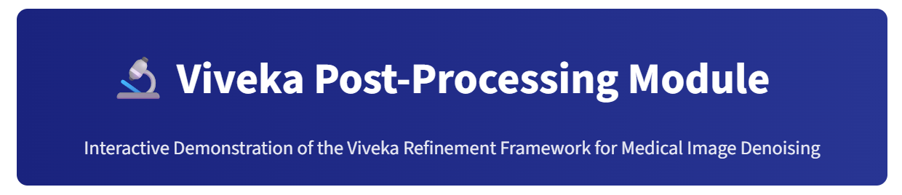

Viveka: Test-Time Refinement for Chest X-Ray Denoising


Reference-free post-processing module for correcting residual artefacts in denoised chest X-rays using physics-based constraints.
Viveka operates on the output of any pre-trained denoiser without requiring access to its architecture, retraining, or clean ground truth images.
File Structure
viveka/
├── README.md
├── LICENSE
├── CITATION.cff
├── requirements.txt
├── .gitignore
├── viveka/
│ ├── __init__.py
│ ├── refiner.py
│ └── utils.py
├── examples/
│ ├── demo_images/
│ │ ├── noisy1.png
│ │ ├── denoised1.png
│ │ └── README.md
│ ├── basic_usage.py
│ └── clinical_metrics.py
└── tests/
├── __init__.py
└── test_refiner.pyInstallation
git clone [https://github.com/sijuswamyresearch/Viveka.git](https://github.com/sijuswamyresearch/Viveka.git)
cd Viveka
pip install -r requirements.txtRequirements
- Python 3.8+
- NumPy ≥ 1.21.0
- OpenCV ≥ 4.5.0
- scikit-image ≥ 0.19.0
Quick Start

Try Viveka directly in your browser:
Features:
- Upload chest X-ray images (PNG, JPG)
- Choose base denoiser type and refinement strength
- View side-by-side: Noisy → Denoised → Refined
- Inspect difference maps (what Viveka changed)
- Download refined images
- No installation, no registration required
Sample images (noisy1.png and denoised1.png) are provided in examples/demo_images/. Download them and upload to the demo for immediate testing.
The demo runs on Streamlit Cloud and processes images using the same code available in this repository.
import cv2
import numpy as np
from viveka import VivekaRefiner
noisy = cv2.imread('noisy_xray.png', cv2.IMREAD_GRAYSCALE).astype(np.float32) / 255.0
denoised = cv2.imread('xgan_output.png', cv2.IMREAD_GRAYSCALE).astype(np.float32) / 255.0
refiner = VivekaRefiner(refinement_strength='balanced')
refined = refiner.refine(denoised, noisy, model_type='X-GAN')Model Types
model_type |
Gain Multiplier | Use Case |
|---|---|---|
'X-GAN' |
0.6 | Physics-informed denoiser |
'RIDNet' |
1.5 | Regression model |
'CBDNet' |
1.5 | Regression model |
'X-ReCNN' |
1.5 | Regression model |
'CGAN' |
0.5 | Generative model |
Refinement Strengths
| Strength | CLAHE Clip Limit | Use Case |
|---|---|---|
'gentle' |
0.8 | Texture-sensitive tasks |
'balanced' |
1.2 | General diagnostic use |
'strong' |
1.5 | Edge-critical tasks |
How It Works
Viveka constructs a spatially varying weight map that determines where and how strongly a DCT-extracted detail signal is added back to the base denoiser output. The weight map combines:
- DCT Detail Extraction — Frequency-domain filtering in the Anscombe-transformed domain with physics-informed thresholds
- Anatomical Zone Decomposition — Bone (Canny edges), lung, and background regions
- Adaptive Gains — Patient-specific bone density and lung texture modulation
- Edge Protection — Exponential gradient weighting to preserve diagnostic boundaries
- Uncertainty Guidance — Local variance analysis to identify unreliable regions
- Pathology Preservation — Edge and Laplacian difference constraint
Pre-CLAHE vs Post-CLAHE
Clinical quality metrics (CNR, FWHM, GLCM entropy, TTPI, SCP) should be computed on the pre-CLAHE output to isolate Viveka’s contribution from histogram equalisation.
refined_display, pre_clahe = refiner.refine(denoised, noisy, return_pre_clahe=True)API Reference
VivekaRefiner
VivekaRefiner(
guide_thresh=1.5,
input_thresh=3.0,
spins=2,
use_adaptive_gains=True,
use_pathology_preservation=True,
use_uncertainty_guidance=True,
use_edge_protection=True,
use_dct_detail=True,
refinement_strength='balanced'
)| Parameter | Type | Default | Description |
|---|---|---|---|
guide_thresh |
float | 1.5 | DCT threshold for denoised output |
input_thresh |
float | 3.0 | DCT threshold for noisy input |
use_adaptive_gains |
bool | True | Patient-specific bone/lung gains |
use_pathology_preservation |
bool | True | Pathology preservation constraint |
use_uncertainty_guidance |
bool | True | Uncertainty-weighted refinement |
use_edge_protection |
bool | True | Exponential edge weight map |
use_dct_detail |
bool | True | DCT-based detail extraction |
refinement_strength |
str | 'balanced' |
'gentle', 'balanced', 'strong' |
refine()
refine(gan_prediction, original_noisy_input, model_type='X-GAN',
baseline_quality=None, baseline_piqe=None, return_pre_clahe=False)| Parameter | Type | Description |
|---|---|---|
gan_prediction |
ndarray | Denoiser output, (H, W), range [0, 1] |
original_noisy_input |
ndarray | Noisy X-ray, (H, W), range [0, 1] |
model_type |
str | Base denoiser type |
return_pre_clahe |
bool | If True, returns (post_clahe, pre_clahe) |
Clinical Metrics
from viveka.utils import compute_cnr, compute_fwhm, compute_glcm_entropy, compute_ttpi, compute_scp
_, pre_clahe = refiner.refine(denoised, noisy, return_pre_clahe=True)
cnr = compute_cnr(pre_clahe, noisy_input=noisy)
fwhm = compute_fwhm(pre_clahe, noisy_input=noisy)
entropy = compute_glcm_entropy(pre_clahe)
ttpi = compute_ttpi(denoised, pre_clahe)
scp = compute_scp(denoised, pre_clahe)| Function | Metric | Interpretation |
|---|---|---|
compute_cnr() |
Contrast-to-Noise Ratio | Higher = better tissue differentiation |
compute_fwhm() |
Full Width at Half Maximum | Lower = sharper edges |
compute_glcm_entropy() |
GLCM Entropy | Near reference ≈5.8 = preserved texture |
compute_ttpi() |
Texture Preservation Index | ≈1.0 ideal; >100 = recovery from zero |
compute_scp() |
Structural Content Preservation | ≈1.0 = identical structure |
Examples
python examples/basic_usage.py
python examples/clinical_metrics.pyTesting
pip install pytest
pytest tests/Citation
@article{viveka2026,
title={Viveka: A Reference-Free Test-Time Refinement Framework for Clinical Fidelity in Deep X-Ray Denoising},
author={Siju K S},
journal={Computer methods and programs in biomedicine},
year={2026}
}License
MIT License — see LICENSE file.